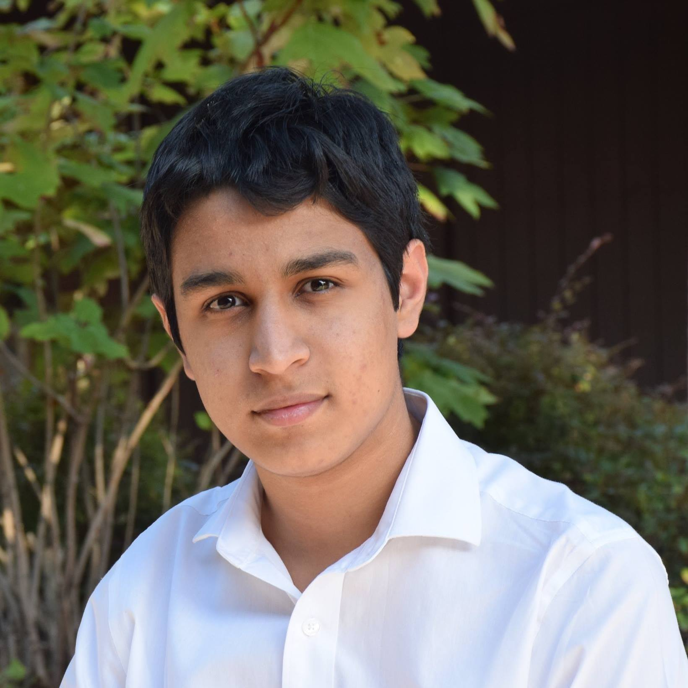
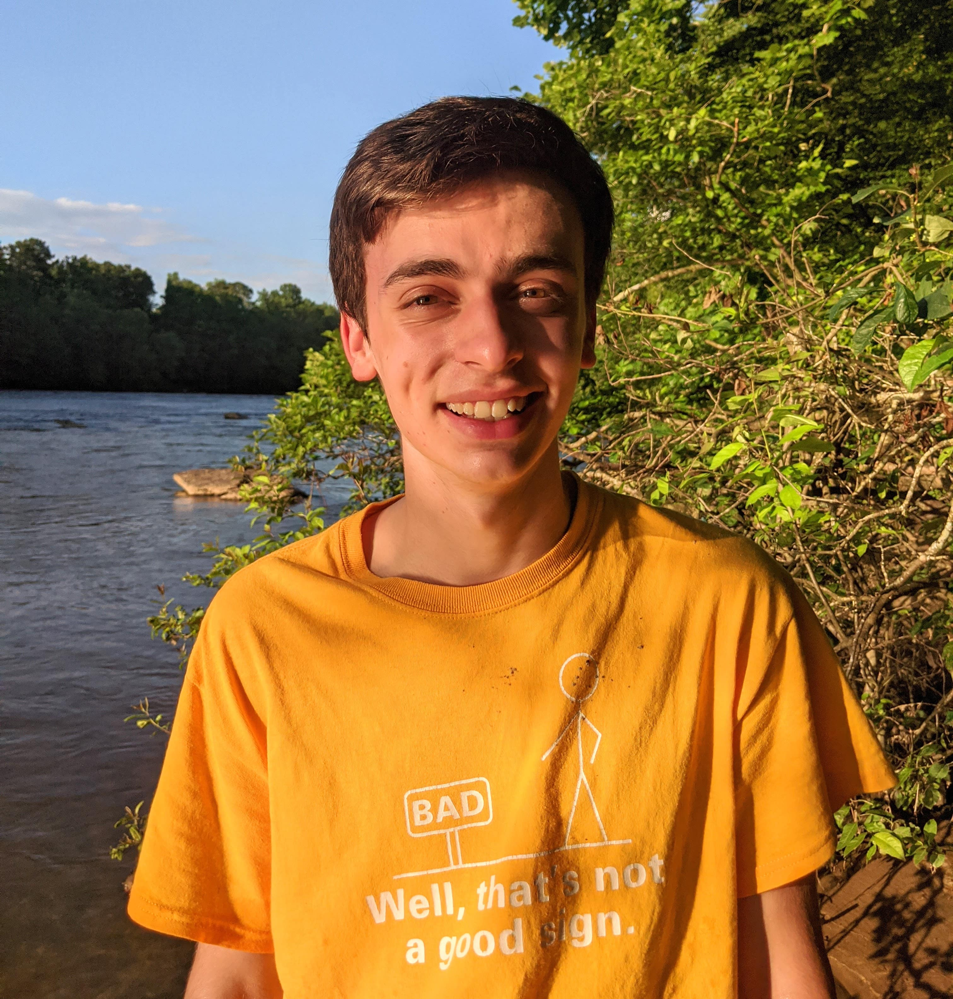
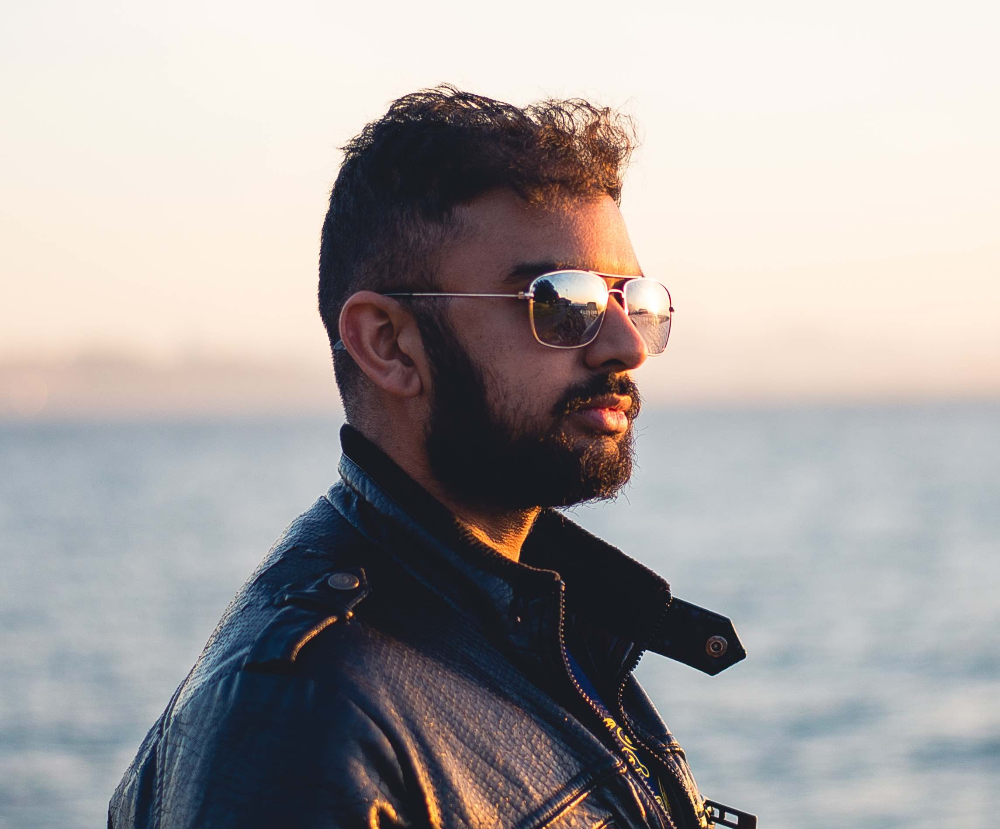
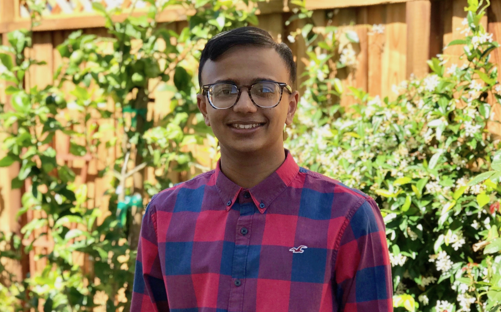

Executive Board
Evaluation Committee
Event Supervisors
Alumni
Executive Board
-
Nicole Xin
Executive Director
Molecular and Cell Biology, Berkeley 2024
-
Flora Huang
Executive Director
Computer Science, Stanford 2025
-
Phillip Liu
Tournament Director
Biophysics, Stanford PhD
-

Iris Xia
Tournament Director
Math & Computational Sciences, Stanford 2024
-

Caitlynn Tran
Tournament Director
Chemistry, Stanford 2025
-
Albert Wang
Tournament Director
Computer Science & Business, Berkeley 2025
-
Kunal Arora
Tournament Director
Stanford 2026
-

Tim Elnitiarta
Tournament Director
Geophysics, Berkeley 2026
-

Lauren Lee
Tournament Director
IEOR, Berkeley 2026
-

William Lee
Tournament Director
Computer Science, Berkeley 2026
-
Gwennie Liu
Tournament Director
Bio & Business, Berkeley 2026
-
Dawen Cheng
Tournament Director
Mechanical Engineering, Stanford 2027
-

Annabelle Huang
Tournament Director
B.A. Molecular and Cell Biology, Berkeley 2027
-
Annabelle Liu
Tournament Director
Civil Engineering, Berkeley 2027
-
Iona Xia
Tournament Director
Undecided, Stanford 2027
Hi! I’m Nicole, a SciOly alum of Mountain View High School. Over the past 4 years, SciOly has allowed me to find and develop my passions and closest friendships leaving me with some of my fondest memories. I’m so excited to be able to stay involved with SciOly through GGSO and be able to bring this experience to others!
Favorite events: Anatomy and Physiology, Microbe Mission
Fun fact: I moved to the Bay Area under the impression that I was only here to visit and attend a summer camp, except it was actually the first day of 4th grade.
Hi everyone! I'm Flora, a Lynbrook High School Science Olympiad alumna! Being a part of Science Olympiad through high school has encouraged me to pursue my STEM interests in college, and I look forward to sharing my love of science to students through GGSO!
Favorite events: Dynamic Planet, Geologic Mapping
Fun fact: I filled in a Water Quality science olympiad exam with Pokémon names once.
Hi, I’m Phillip, a Scarsdale High School and Caltech alum. I’ve been involved in Science Olympiad as a competitor since my middle school years, and I’ve also served as an Event Supervisor and on the Caltech SciOly Planning Team when I was in undergrad. The Science Olympiad community has really helped me explore my passions in STEM, and I’m excited to contribute back through GGSO!
Favorite events: Cell Biology, It's About Time
Fun fact: A friend and I have unfortunately eaten two AYCE KBBQ places out of business :(
Hi! I'm Iris and I'm a Monta Vista High School and Kennedy Middle School SciOly alumna! Competing in Science Olympiad for the past six years has made a profound impact on my intellectual goals and introduced me to an amazing STEM community. I'm excited to continue sharing my love for SciOly as part of the GGSO team!
Favorite events: Remote Sensing, Write It Do It, Sounds of Music
Fun fact: Getting subbed last-minute into Meteorology in seventh grade literally shaped my research interests!
Hi! I'm Caitlynn Tran and I am an Irvington High School and Horner Junior High School SciOly alum. I have created some of my fondest memories and developed many of my passions from SciOly. I am excited to still be involved in this amazing community through GGSO and share my love for science with others.
Favorite events: Mousetrap Vehicle, Write It Do It, Forensics
Fun fact: I know how to spin flag, rifle, and sabre (though not particularly well for rifle and sabre).
Hello! I'm Albert and I'm a Mira Loma High School and Winston Churchill Middle School Scioly alum. I've competed in mostly physics events in the past and was an event supervisor for Wifi Lab last year. I'm excited to continue GGSO as a Tournament Director this year!
Favorite events: Sounds of Music, Hovercraft, Optics
Fun fact: I can't touch my shoulders.
Hi folks! I’m Kunal, a Mason High School and Middle School Science Olympiad alum. Beyond helping to shape my passions and career goals, my SciOly team quickly became a second family after I moved to Ohio. I’m excited to keep giving back to this wonderful community through GGSO!
Favorite events: Forensics, Ornithology, Sounds of Music
Fun fact: I think s'mores taste best when made over a Bunsen burner.
Hello there! I'm Tim, a Troy HS/Kraemer MS alum. Over my five years of Scioly, I've competed, coached, and directed various tournaments. GGSO is special to me because it was the last in-person tournament I ever competed in. I'm excited to join the team and give others that classic GGSO experience!
Favorite events: Codebusters, Meteorology, It's About Time
Fun fact: I relied on my circuitry knowledge from my Nerf modding hobby to get through a whole year of Div B Circuit Lab
Hi! I'm Lauren, a Castro Valley High School alum! I've competed in SciOly for 7 years. From eating instant ramen at every competition to making 5-point font cheatsheets, I’ve made some of my fondest memories as a competitor. GGSO was one of the first invitationals I competed in and I'm excited to give back to the SciOly community!
Favorite events: Write it Do it, Codebusters
Fun fact: I named both of my hamsters after scientists!
Heyo! I’m Gwennie, and I am an alum of Torrey Pines High School in San Diego, California. I have competed in Science Olympiad for 8 years, which has provided me with lifelong friends and many new scientific interests. I’m looking forward to contributing back to the wonderful SciOly community through GGSO!
Favorite events: Astronomy, Fossils, Rocks and Minerals
Fun fact: I have a stuffed carrot named Seefee.
Hey there! My name is Dawen and I'm currently a freshman at Stanford studying Mechanical Engineering and Political Science. I've competed for a total of 7 years, first for Gallagher Middle School and later for Barrington High School, which are both in the cool state of Rhode Island (do we even exist?)! Two of my favorite things are Science Olympiad and the Golden State Warriors!
Favorite events: Battery Buggy, Boomilever, Reach for the Stars
Fun fact: Not only had I never competed at GGSO, I had also never visited California (until I committed to Stanford)!
Hi! My name is Annabelle Huang and I’m a Lexington High School alum. I’ve loved competing, coaching, and directing tournaments for SciOly throughout high school. SciOly gave me so many great learning experiences and memories, so I’m really excited to stay involved through GGSO!
Favorite events: Anatomy and Physiology, Boomilever
Fun fact: I can make balloon animals.
Hi everyone! I'm Annabelle, a Milpitas High School SciOly alum. Being involved with SciOly these past 4 years has been so much fun, and I've had the opportunity to meet many amazing individuals. I’m excited to continue my journey in SciOly and give back to this community through GGSO!
Favorite events: Forensics, Bridges, Chemistry Lab
Fun fact: I think jellyfish are cool:)
Hi, I'm Iona and I'm a Monta Vista High School and Kennedy Middle School SciOly alum. Having done SciOly for seven years, it was my first step into the world of STEM and a catalyst for my further exploration in the various fields of science. Furthermore, I've been able to develop various life skills as well as a wonderful community through SciOly, and I'm excited to continue growing this community in GGSO.
Favorite events: Experimental Design, Forensics, Write It Do It
Fun fact: I was almost not allowed to compete in Write It Do It at nationals because my wristband was too loose.
Evaluation Committee
Interested in becoming an Event Supervisor/Test Committee member for the 2025 GGSO Tournament? Keep an eye out for when applications open in fall 2024!
-

Victor Lam
Test Committee
Molecular Biology and Biochemistry, UCSF PhD
-

Celine Wang
Test Committee
Chemistry, Berkeley PhD
-

Mihir Singhal
Test Committee
Computer Science, Berkeley PhD
-
Elaine Qu
Test Committee
Biochemistry & Biophysics, Michigan 2025
-

Saumya Swati
Test Committee
Cognitive Science + Psychology, UCSC 2026
-
Emily Dai
Test Committee
Chemistry, Berkeley 2027
-

Sahil Gandhi
Test Committee
Computer Engineering, Texas A&M 2027
-
Ether Gu
Test Committee
Geophysics, Berkeley 2027
-
Eric Ju
Test Committee, Event Supervisor
Berkeley 2027
-
Rudy Mahajan
Test Committee, Event Supervisor
Chemical Engineering, Berkeley 2027
-
Runyan (Run) Zhou
Test Committee
Texas A&M 2027
Hi, I'm Victor! I'm originally from Texas, and graduated from UT Austin in 2017. I'm a Science Olympiad alum from Cypress Lakes High School, and I continued to volunteer at SciOly tournaments in undergrad. I'm currently in the Bay Area pursuing my PhD and researching viruses!
Favorite events: Microbe Mission, Fossils, History of Science
Fun fact: As an overachiever, I often split my time between SciOly and band back in high school. I still continue to play clarinet today!
Hi! I’m Celine and I’m a proud Paly Science Olympiad alum. Scioly has been a big part of my life, from competing in high school to volunteering, supervising, and writing tests with the Caltech Scioly team. I’m excited to be back in the Bay working on GGSO, my favorite tournament competing back in the day!
Favorite events: Forensics, Protein Modeling
Fun fact: I have t-shirts from 5 GGSO tournaments.
Hi! I did Scioly with Palo Alto High School for 6 years mastering my skills with Scratch (the pinnacle of programming languages), and I'm excited for my fourth year on Test Committee.
Favorite events: Fermi Questions, Astronomy
Fun fact: My favorite bird is the common hoopoe.
Hi! I'm Elaine, a Troy Athens HS alum. Competing in Protein Modeling permanently altered my brain chemistry, and I hope that current competitors are also able to find motivation for their future studies through Science Olympiad as well.
Favorite events: Protein Modeling
Fun fact: I only eat pears after boiling them.
hi there, i'm saumya! i'm from los angeles, but i go to uc santa cruz. i'm studying cognitive science and psychology (with a possible stem education minor). i've been a part of science olympiad since sophomore year of high school—after graduating, i've been volunteering at tournaments whenever possible. this is my first year with ggso and i'm super excited!
Favorite events: Forensics, Ornithology, Anatomy and Physiology
Fun fact: i like to eat chocolate-covered ice cream bars with a spoon (i have sensitive teeth).
Hi! I'm a freshman at UC Berkeley studying chemistry. I like reading (the chem textbook and thriller webcomics) and drawing!
Favorite events: Green Generation, Dyanmic Planet
Fun fact: Cheese enthusiast
Hi, I'm Sahil, a freshman at Texas A&M from Katy, Texas. In high school, I competed in a wide variety of events for Seven Lakes High School, and I really appreciated the opportunity to work towards and create a lasting legacy throughout my 4 years. In my free time, I enjoy finding a good book or movie.
Favorite events: Protein Modeling, Forestry, Fermi Questions
Fun fact: My pet hamster died when its tunnel collapsed on it.
I am a Science Olympiad alum of Great Oak High School. This is my first year volunteering instead of competing, and I am very excited to contribute to GGSO!
Favorite events: Dynamic Planet, GeoLogic Mapping
Fun fact: I can play the alto saxophone(but I'm really bad at it now).
Hey, I'm Eric, and I am an alum from Monta Vista High School and Kennedy Middle School. I've been competing and volunteering at SciOly tournaments for several years now and I'm excited to continue to do so at GGSO!
Favorite events: Codebusters, Forensics, Write It Do It
Fun fact: I dressed up in a maid outfit for Halloween.
I am a freshman at UC Berkeley majoring in Chemical Engineering and Genetics and Plant Biology. I went to Davis High School and my favorite event was forestry! It motivated me to study plants in college and beyond. My other hobbies are playing the flute, hiking, running, and eating instant pho.
Favorite events: Forestry, Chem Lab, Rocks and Minerals
Fun fact: I speak Japanese!
Howdy! My name is Run and I am a current freshman at Texas A&M University and I formerly competed for Clements High School Science Olympiad. Now I write and review tests :D
Favorite events: Ornithology, Forestry, We've Got Your Number
Fun fact: I'm a Swiftie :)
Event Supervisors
Interested in becoming an Event Supervisor/Test Committee member for the 2025 GGSO Tournament? Keep an eye out for when applications open in fall 2024!
-
Ronak Badhe
Air Trajectory
Computer Science, UCLA 2026
-

Jason Chang
Air Trajectory
Mathematics-Computer Science and Aerospace Engineering, UCSD 2026
-
Phoenix He
Anatomy and Physiology
Chemistry, UCLA 2027
-

Ahana Wokhlu
Anatomy and Physiology
Psychology and Integrative Biology, Berkeley 2027
-
Tad Komacek
Astronomy
University of Maryland 2013
-
Connor Todd
Astronomy
Space Telescope Science Institute 2020
-

Robert Lee
Astronomy
Aerospace Engineering and Mathematics of Computation, UCLA 2024
-
Megan Luo
Chemistry Lab
Molecular and Cell Biology, Berkeley 2024
-
Eric Wu
Chemistry Lab
Chemistry & Math, Berkeley 2027
-

Caleb Chiang
Codebusters
Mathematics, University of Illinois at Urbana-Champaign 2025
-
Eric Ju
Codebusters
Berkeley 2027
-
Dominique Sun
Codebusters
Mechanical Engineering, Berkeley 2027
-

Joe Lin
Detector Building
Computer Science, UCLA 2026
-
Oliver Ni
Detector Building
EECS, Berkeley 2026
-
Aniyah Shen
Disease Detectives
Human Biology & Creative Writing, Stanford 2027
-
Emma Xiang
Disease Detectives
Mathematics & Economics, USC 2027
-
Serena Yung
Disease Detectives
Cognitive Science, Berkeley 2027
-
Ben Yan
Dynamic Planet
Computer Science and Mathematics, Stanford 2024
-
Jackie Li
Dynamic Planet
Material Science, UCLA 2027
-
Jaime Yu
Dynamic Planet, Scrambler
Mechanical Engineering, Stanford 2027
-
Franklin Hung
Ecology
Materials Science and Engineering, Berkeley 2026
-
Garima Upadhyay
Ecology
Data Science, Berkeley 2027
-

Alex Ozdemir
Experimental Design, Cybersecurity
Computer Science, Stanford
-

Isha Shah
Experimental Design
Astrophysics, Berkeley 2027
-
Anjali Sreenivas
Experimental Design
Computer Science, Stanford 2027
-
Andrew Chen
Fermi Questions
Stanford 2026
-
Andrew Chang
Fermi Questions
Computer Science & Economics, University of Pennsylvania 2027
-
Anton Dao
Fermi Questions
Molecular Cell Biology + Intended Business Administration, Berkeley 2027
-

Christopher Luo
Flight
Mechanical Engineering, Berkeley 2025
-
Matthew Song
Flight
EECS, Berkeley 2025
-
Andrew Liu
Forensics
Math and Computer Science, Berkeley 2025
-
Rudy Mahajan
Forestry
Chemical Engineering, Berkeley 2027
-
Matthew Kim
Fossils
Biology, Stanford 2026
-
Arnav Vora
Fossils
Computer Science and Engineering, UCLA 2026
-

Brian Amaro
Geologic Mapping
Stanford 2024
-

Vivek Vajipey
Geologic Mapping
Stanford 2025
-
Claudia Phillips
Microbe Mission
Bioengineering, Stanford 2024
-
Ryan Wong
Microbe Mission
Computational & Systems Biology, UCLA 2026
-
Calton Kong
Optics
Materials Science and Engineering, Berkeley 2024
-
Jerry Yuan
Optics
Physics, Stanford 2027
-

Amy Jiang
Robot Tour
Berkeley 2022
-
Jason Katz
Robot Tour
Computer Engineering, Georgia Tech 2024
-

Angel Millard-Bruzos
Robot Tour
Electrical Engineering, Stanford 2024
-

Nicole Lee
Scrambler
Computer Science, Berkeley 2025
-
Tony Mei
Tower
Biomolecular Engineering and Bioinformatics, UC Santa Cruz 2027
-

Ryan Lee
Wind Power
Electrical Engineering, UCLA 2024
-

Nir Shatsky
Wind Power
Mechanical Engineering, Las Positas College 2024
-
Antonio Velasco
Wind Power
Electrical Engineering, UC Irvine 2026
-
Sriya Pillutla
Write It Do It
Molecular and Cell Biology, Berkeley 2027
Hi! I'm Ronak. I'm a Lynbrook HS alumni who competed throughout middle and high school. Good luck to everyone competing!
Favorite events: Trajectory, Hovercraft, Codebusters
Fun fact: I play a lot of chess! Challenge me on lichess (r2d2bb8)!
Hi! I'm Jason, a second-year at UCSD studying Math-CS and and Aerospace Engineering. I competed in the build and inquiry events in MS/HS, and my favorite event was Battery Buggy and Trajectory. I occasionally supervise at other competitions nearby as well!
Favorite events: Battery Buggy, Trajectory
Fun fact: n/a :(
Hi! I'm an alum of a high school from a town in a galaxy. Some favorite memories of GGSO include making evil Sunny D© (tonic water + orange juice) on the plane last year to the comp. :)
Favorite events: Remote Sensing, Astronomy, Protein Modeling
Fun fact: Condensed milk is the best thing to put on toast—in my humble opinion.
Hi! I’m Ahana, a first-year Berkeley student studying Psychology and Integrative Biology. I competed in Science Olympiad for Mountain View High School and really enjoyed it, so I’m excited to be an event supervisor this year!
Favorite events: Anatomy & Physiology
Fun fact: I have an extensive collection of Disney ears.
I am an assistant professor of astronomy at the University of Maryland, College Park. I've been helping out with the Astronomy event since 2010, when I was an undergraduate at UChicago.
Favorite events: Astronomy
Fun fact: I'm currently at a conference in the southern hemisphere, and everything in the sky is upside-down. It appears obvious, but is still surprising to experience.
Hello all! I am a Masters student at the University of Michigan, and I'm excited to be back at GGSO co-supervising Astronomy. I love all things space, and am pursuing an M.Eng degree in Space Engineering for this Spring. When I'm not doing Astro stuff, I love running, playing trumpet and reading/writing poetry.
Favorite events: Astronomy, GeoLogic Mapping, Remote Sensing
Fun fact: Once on a backpacking trip, my friends and I got stranded in a blizzard in the highest-elevation city in America (Leadville, CO - 10,151 ft).
Hi! My name is Robert and I'm an alum of Westview High School in San Diego, California. Having competed for 7 years, SciOly has created timeless memories and introduced me to many lifelong friends. I'm excited to give back to this community that has given me so much.
Favorite events: Astronomy, Boomilever, Fermi Questions
Fun fact: The 2019 Southern California State Tournament was the first and last time I competed in Fermi Questions.
Hi, I'm Megan and I'm a Sunny Hills High School alum. I've made some of my closest friends and fondest memories through Science Olympiad. I'm excited to be back for another season!
Favorite events: Forensics, Protein Modeling
Fun fact: Drinking water keeps you hydrated.
Hey y'all! I'm Eric, and I competed with MVHS for all four years of high school. I competed mostly in chem/physics events, but I really wish I could've done Protein Modeling. I'll do my best to write a fun test, hope to see you there!
Favorite events: Circuit Lab, Forensics
Fun fact: I have over 100 stuffed animals.
Hi! I'm Caleb; you can call me Klebb. I'm an alumnus of Mission San Jose High School, serving as the captain for the SciOly team for two years. This is my 10th year participating in Science Olympiad as competitor or volunteer. Good luck everyone!
Favorite events: Fermi Questions, Codebusters, Pokemon Trivia
Fun fact: In my free time I click on Google Maps a lot.
Hey, I'm Eric, and I am an alum from Monta Vista High School and Kennedy Middle School. I've been competing and volunteering at SciOly tournaments for several years now and I'm excited to continue to do so at GGSO!
Favorite events: Codebusters, Forensics, Write It Do It
Fun fact: I dressed up in a maid outfit for Halloween.
Hi! I'm Dominique, an alum and former captain of Arnold O. Beckman High School in Irvine, California. Throughout my six years of Science Olympiad, I've experienced some of my fondest memories alongside my teammates. I'm excited to continue my SciOly journey and give back to the community that grew my passion for STEM through GGSO!
Favorite events: Codebusters, Bridge, Disease Detectives
Fun fact: I've never broken a single bone in my body, but both of my pinkies are crooked.
Hi everyone! I'm Joe, a Lynbrook High School alumni now studying Computer Science at UCLA. I love to hike and play basketball/beach volleyball, and I’m hoping to, one day, learn how to surf! Having competed in Science Olympiad since middle school, I'm excited to give back to the SciOly community as an Event Supervisor for Detector Building!
Favorite events: Detector Building, Dynamic Planet, Gravity Vehicle
Fun fact: I love being in nature!
Hi! I'm Oliver. I'm a Lynbrook HS Alum, and I'm super excited to work on Scioly again. GGSO was my first ever tournament, so I'm excited to bring that experience to many others!
Favorite events: Detector Building, WiFi Lab, Codebusters
Fun fact: I was born on February 29.
Hi! I'm Aniyah (Uh-knee-yuh), and I am an alum of University High School Science Olympiad. I competed in SCIOLY for 5 years and it was one of the most significant activities I did in middle/high school! I've met a lot of cool people/friends and gone deeper into specific scientific interests that I never would've otherwise. I love all things biology, art/music, and nature-y. Happy to continue being a part of the SCIOLY community!
Favorite events: Protein Modeling, Designer Genes
Fun fact: I can identify any Taylor Swift song within the first two seconds. :)
Hi! My name is Emma, and I’m an alum of Acton-Boxborough Regional High School in MA. I loved coaching for and competing alongside AB SciOly in high school, and I’m super excited to work with the community across the country through GGSO!
Favorite events: Codebusters, Disease Detectives, Experimental Design
Fun fact: I had to celebrate my 18th birthday in Kansas at 2023 Nats (and also skip prom).
Hellos!! I'm Serena, a first year at UC Berkeley. I've competed in Div C for 4 years and I'm beyond excited to supervise for GGSO! :>
Favorite events: Forensics, Anatomy & Physiology
Fun fact: I'm an avid collector of plants and polaroids :D
Hi! I'm Ben, an alum of Century High School in Minnesota. I'm a senior at Stanford University, studying math, creative writing, and computer science. I'm elated to supervise for GGSO this year!
Favorite events: Astronomy, Meteorology, Dynamic Planet
Fun fact: I'm scared of heights but absolutely love rollercoasters.
Wassup my homies, my name is Jackie and my favorite cheese is the pepper jack because it is my namesake cheese. I hail from a small town located somewhere in SoCal where I found a passion for the physical sciences. In my free time I enjoy stargazing, bird watching, and plane spotting! I am currently pursuing a degree for material science and plan on minoring in geophysics.
Favorite events: Remote Sensing, Dynamic Planet, Environmental Chemistry
Fun fact: I am 1.5E10 hydrogen atoms tall.
Hello friends! I'm Jaime, an earth-loving mechanical engineer with a focus in sustainability. If you spot me, I'll likely be building some sort of practical prank, running (or biking, or climbing or hiking) up mountains and walls. I love talking about pretty much anything, so feel free to say hi!
Favorite events: Trajectory, Dynamic Planet, Battery Buggy
Fun fact: I can wiggle my ears!
Hi everyone! My name is Franklin and I’m an alumni of Cypress Woods HS (TX). I’m a second year Materials Science and Engineering student and love learning about climate change and ecology related topics! In my free time I love listening to podcasts, hiking, and reading.
Favorite events: Ecology, Wright Stuff, Green Generation
Fun fact: I love all things nature!
Hey! I'm Garima, an alum of American High. The last six years of competing in SciOly has resulted in a newfound appreciation for duct tape and an healthy distrust in potato salad. More importantly, however, it has helped me meet some of my closest friends! I'm excited to continue to help foster the community that has given me so much--through GGSO.
Favorite events: Water Quality, Disease Detectives, Write It Do It
Fun fact: I've (voluntarily) read 80 books in 2023.
I'm a Phd. student at Stanford, investigating how cryptography and automated reasoning can be used to make trustworthy computer systems. I grew up Sacramento, California, where Science Olympiad got me excited about all things related to science.
Favorite events: Optics, Circuit Lab, Mission Possible
Fun fact: I love black licorice.
Hi! I'm Isha, and I'm a Lynbrook SciOly alumna! SciOly decided my major and my obsession with Earth Science and has also given me the ability to pull explanations for scientific processes out of thin air! I'm excited to bring GGSO to a new generation of high schoolers!
Favorite events: Meteorology, Dynamic Planet, Tower
Fun fact: I've hoarded boxes of tower, boomilever, and bridge corpses in every corner of my garage.
Hi all!! My name is Anjali and I'm from the Seattle suburbs in Washington State. I'm a freshman studying computer science at Stanford, and I’m so thrilled to be a part of the team putting on GGSO this year! SciOly was one of my favorite parts of high school and I'm excited to be able to share that with all of you. Looking forward to meeting you soon! :)
Favorite events: Disease Detectives, Forensics, Experimental Design
Fun fact: I LOVE to sing and start bursting into song at the most random of times. :)
Hi! I'm an alum of Portola High School and Jeffrey Trail Middle School. SciOly was one of the best experiences I've had in middle and high school, so I'm super excited to supervise for GGSO this year.
Favorite events: Fermi Questions, Sounds of Music, Thermodynamics
Fun fact: I play the bass clarinet (no, it's not a saxophone).
Hi! I'm Andrew, and I competed with Mountain View High School for 4 years. I'm excited to be writing for my favorite event!
Favorite events: Fermi Questions, Disease Detectives, Codebusters
Fun fact: I love cooking and trying new foods
Hello everyone! I'm Anton, an alum from Pleasant Grove High School in Sacramento, CA. I've been an active part of SciOly since my sophomore year in high school. I loved every moment of it, from the intense study/build sessions with friends, to of course, winning well-earned medals for your hard work! I’m looking forward to giving back to the SciOly community by supervising GGSO!
Favorite events: Bridge, Fermi Questions, Green Generation
Fun fact: When I was 11, my little brother and I kidnapped our pet turtle from a local pond, but it ran away after 3 weeks...
Hi! I'm Christopher, a Mira Loma High School Science Olympiad alum. I've been a part of Science Olympiad ever since middle school and I've really enjoyed all the competitions over the years. I'm very excited to be a part of the GGSO team!
Favorite events: Wright Stuff
Fun fact: Pandas are the best.
Hey everyone! My name is Matthew, and I'm from Milpitas High School. From the 7 years I've done SciOly, I've learned many things. Here are a few: Whatever can go wrong will probably go wrong, especially during competition, but that's okay. Building things is very fun, and definitely worth getting 0 hours of sleep over. Wright Stuff planes and Helicopters are very fragile. Towers are scary when they explode. And finally, you're never too old for SciOly! Can't wait to be part of this awesome competition :)
Favorite events: Mission Possible, Wright Stuff, Towers
Fun fact: From personal experience, salt makes very good timers.
Hi! I’m an SSA alum, and I’m excited to ES again this year!
Favorite events: Water Quality, Forensics, Designer Genes
Fun fact: I never grew out of my punk rock phase
I am a freshman at UC Berkeley majoring in Chemical Engineering and Genetics and Plant Biology. I went to Davis High School and my favorite event was forestry! It motivated me to study plants in college and beyond. My other hobbies are playing the flute, hiking, running, and eating instant pho.
Favorite events: Forestry, Chem Lab, Rocks and Minerals
Fun fact: I speak Japanese!
Hello! I’m an alum of Jeffrey Trail Middle School and Portola High School. I have made some of my greatest and fondest memories as part of Science Olympiad. I hope I can now contribute to the creation of core memories for GGSO competitors!
Favorite events: Fossils, Anatomy and Physiology, Scrambler
Fun fact: I am an avid fossil collector, particularly in dinosaur fossils, of over 12 years!
Heyo, I'm Brian Amaro. In high school, I led and competed with Chattahoochee High School's Science Olympiad team. From my interests in Earth Science to many great memories, I owe so much to SciOly, and I'm excited to be able to give back to the community by helping out with GGSO.
Favorite events: Dynamic Planet, Codebusters, Geologic Mapping
Fun fact: I've eaten waffles with peanut butter for breakfast for the past 10 years.
Hi, I'm Vivek! I competed in Science Olympiad at West Windsor-Plainsboro High School North and Community Middle School. Apart from writing SciOly tests, I enjoy playing spikeball, listening to music, and hiking.
Favorite events: Dynamic Planet, GeoLogic Mapping, Fossils
Fun fact: Every member of my family's initials are VV.
Claudia has been involved with Science Olympiad for five years, including three years of competition with Northville High School. In her free time, she enjoys reading, hiking, knitting, and training with the Stanford Taekwondo team.
Favorite events: Protein Modeling, Materials Science, Anatomy and Physiology
Fun fact: My favorite protein is botulinum neurotoxin type A, although I hope that neither me nor anyone else ever has to encounter it in the wild
Ryan is an avid French bread enthusiast and average League of Legends enjoyer (although ever since he’s stopped playing as much, he’s managed to get accepted to college, join an amateur dance team for a quarter, and contribute to cancer and dementia research). He takes too many walks at 3am and if you find him on campus, there’s a nonzero chance of his backpack containing a bag of mangoes. In his spare time, he runs the 3 Los Angeles Regional Science Olympiad tournaments as the Regional Director and works towards his degree in Computational Biology.
Favorite events: Awards Ceremony
Fun fact: At some point he had all the lyrics to the first act of Hamilton memorized. Unfortunately for his friends, he’s also tone deaf.
Hi I'm a senior in 4th year Materials Science major. I'm like electrochemistry and energy, glad to be back at my favorite scioly tournament.
Favorite events: Helicopters, Optics
Fun fact: My helicopter got stuck in a projector screen at GGSO.
Hi! I'm Jerry, a Mission San Jose alum. I've done SciOly for four years across all three divisions, and it's been a super fun way for me to learn about unique fields while collaborating with an amazing community and talented friends. Super excited to see everyone at GGSO!
Favorite events: It's About Time, Astronomy, Detector Building
Fun fact: Bugs often ended up in my water clock during my It's About Time trials. (rip ;-;)
Hi, I'm Amy! I'm a SciOly alum from Interlake High School, where I competed for three years--a few too little, in my opinion. Despite (or maybe thanks to...) almost losing three teammates on the plane and another two during the BART ride, GGSO has been one of the best tournaments I've attended in high school and I'm excited to make it even better!
Favorite events: Astronomy, Hovercraft, Wright Stuff, Materials Science
Fun fact: I'm very passionate about the taste of water.
I like Circuit Lab.
Favorite events: Circuit Lab, Circuit Lab, Circuit Lab
Fun fact: I did Circuit Lab.
Hi, I'm Angel! I'm a student at Stanford interested in EE, ME, and CS. In high school I loved spending time working on my SciOly builds (Mission Possible, Mousetrap Vehicle, Detector Building) and taking Circuit Lab tests. I hope to become an engineer one day and continue working on 'builds,' hopefully on a much larger scale.
Favorite events: Mission Possible, Circuit Lab, Mousetrap Vehicle
Fun fact: I can solve a Rubik's cube one-handed in under two minutes!
Hello! I am Nicole and I competed in Science Olympiad throughout my 4 years at Mark Keppel High School. Every year, I always started my build events the night before competition, just so there would be a smaller chance of them being destroyed by the time I made it to my event. I've also never been to a Scioly invitational before, but I am excited to be a part of the team behind GGSO :D
Favorite events: Mission Possible, Wright Stuff, Helicopters
Fun fact: Somehow every year my Wright Stuff planes get stepped on :c
Hello! My name is Tony, and I'm currently a student at UC Santa Cruz studying Biomolecular Engineering and Bioinformatics. I am a Castro Valley High School alum, and competed mostly in structural and life science events. Having competed at GGSO multiple times, I'm quite excited to ES this year!
Favorite events: Bridge, Anatomy and Physiology, Ornithology
Fun fact: My favorite bird is the black-billed magpie.
Hi, I'm Ryan, an alum of Mira Loma HS SciOly. I had a lot of fun competing in SciOly as a high schooler, so I hope to return the favor as one of your Wind Power event supervisors this year.
Favorite events: Ornithology, Fermi Questions, Game On
Fun fact: I will never learn how to drive :D
Hi, I'm a Castro Valley HS alumni. Procrastination isn't an illness, it's a way of life; one that I follow religiously. I am also a Jeremy Clarkson follower.
Favorite events: Gravity Vehicle, It's About Time, Mystery Architecture
Fun fact: \"An ounce of luck is better than a pound of wisdom", unless you're taking one of my tests.
Aloha! My name is Antonio Velasco and I'm an alum of Pearl City High School in Honolulu, Hawaii. I'm excited to be involved with GGSO and to continue my love of SciOly here.
Favorite events: Forensics, Potions & Poisons, Disease Detectives
Fun fact: I'm an Eagles fan despite being from Hawaii. (2024 SUPER BOWL BOUND TRUST IN HURTS)
Hi! I'm Sriya and I am a Mountain View High School alum. In my free time I love to read, hike, and listen to music. I loved competing in SciOly in high school and I'm excited to stay involved through GGSO :)
Favorite events: WIDI, Disease Detectives
Fun fact: I have read the Harry Potter series over 38 times (yes I keep count)
Alumni
-

Rohan Chakraborty
Founder
Chemical Engineering, Berkeley 2019
-

Abraham Chen
Founder
Engineering Product Manager at Apple, SF
Economics and Computer Science, Berkeley 2019
-

Ryan Cohen
Founder
Business Analyst at McKinsey & Co
Mechanical Engineering, Stanford 2019
-

Denis Li
Founder
Electrical Engineering and Computer Science, Berkeley 2019
-

Alex Lu
Founder
Johns Hopkins MD-PhD Program
Biomedical Computation, Stanford 2019
-

Dhruv Puri
Founder
Molecular and Cellular Biology, Berkeley 2019
-

Jonathan Wang
Founder
Medical Student @ UCSF, AI Research Associate @ Bill and Melinda Gates Foundation
Computational Biology, Stanford 2019
-

Neil Patil
Website
Computer Science, UT Austin 2020
-

Colin Barber
Tournament Director
Microbiology, Berkeley PhD Program
-

Kevin Meng
Executive Director
Psychology and Economics, UC Berkeley 2020
-

Kelly Yu
Tournament Director
Economics, Berkeley 2021
-
Sarah Gurev
Executive Director
Computer Science, Stanford 2020
-

Valerie Hsieh
Tournament Director
Physics and German, Berkeley 2020
-
Kathryn Li
Executive Director
Harvard Medical School (HST) MD Candidate
Molecular and Cell Biology, Berkeley 2020
-

Amy Lo
Tournament Director
Stanford 2023
-

Martin Altenburg
Tournament Director
Electrical Engineering, Stanford 2021
-
Faith Harron
Executive Director
Mechanical Engineering, Stanford 2021
-

Allison Yao
Tournament Director
MEB and Psychology, Berkeley
-

Evelyn Zhang
Executive Director
Human Biology, Stanford 2021
-
Shivansh Baveja
Tournament Director
CS and Math, Berkeley 2025
-
Nikhil Gupta
Tournament Director
Mechanical Engineering, Berkeley 2022
-

Adrian Huang
Tournament Director
Chemistry, Berkeley PhD
-

Amy Jiang
Tournament Director
Berkeley 2022
-

Arya Sharma
Tournament Director
Computer Science, Berkeley 2024
-

Matthew Tang
Executive Director
EECS, Berkeley 2022
-

Sophia Wang
Executive Director
Molecular and Cell Biology, Berkeley 2022
-

Emily Wen
Executive Director
CS and Math, Stanford 2022
-

Vinay Gautam
Tournament Director
Computer Science & Statistics, Berkeley 2023
-

Britney Weng
Executive Director
MCB & Business Administration, Berkeley 2023
-

Alvin Xu
Tournament Director
EECS, Berkeley 2024
Hi! I'm Rohan, and I’m an alum of Seven Lakes High School and Beckendorff Junior High in Katy, Texas. Throughout my Science Olympiad experience, I’ve competed extensively in building events such as Gravity Vehicle and Scrambler as well in as lab events like Chemistry Lab and Forensics. I had a blast organizing our inaugural tournament for you all, and I'm looking forward to making our next tournament even greater!
Favorite events: Forensics and Chem Lab
Fun fact: I love anything and everything Drake.
Hi, my name is Abraham Chen, I’m a Mounds View Scioly Alumni, and I’ve been involved in Scioly all through high school. One time my team’s Scioly bus got stranded on a highway for 7 hours, making our trip to a tournament 21+ hours. That’s dedication.
Favorite events: Forensics, Fossils and Experimental Design
Fun fact: I like heights because it scares me.
Hey, I’m Ryan! I’m an alum of Mira Loma High School from Sacramento, California. I co-founded and led communications/strategy for GGSO, and I also volunteer at NorCal state and regional tournaments on the arbitration committees. My incredible science olympiad experience inspired me to pursue a career in systems engineering and autonomous transportation, and I hope to promote and expand access to those opportunities for students today.
Favorite events: Circuit Lab, Mission Possible, MagLev
Fun fact: Once spent a summer working underground at an Andean archeological site.
I've been involved with Science Olympiad at Mounds View since 2012. Science Olympiad was by far my favorite thing that I did in high school and I hope our tournament will be a blast for everyone attending!
Favorite events: It’s About Time, Technical Problem Solving, Compound Machines
Fun fact: People who have more birthdays live longer.
Hi! I'm Alex, from Palo Alto High School. SciOly was a huge part of my life in high school, and what first introduced me to the intersection of science, tech, and medicine. I hope that through GGSO, others will be able to have the same eye-opening experiences that I once did. Currently missing late night study sessions, forensics lab practice, and folding toobers with the rest of the team.
Favorite events: Anatomy and Physiology, Forensics, WIDI
Fun fact: My team dyed our hair (everyone's, all of it) green for 2013 Nationals!
Hi, my name is Dhruv, I’m a LASA Scioly Alumni, and I’ve been involved in Scioly all through high school. Science Olympiad helped me find my passion for biology and had led me to a career in medicine.
Favorite events: Anatomy and Physiology, Protein Modeling, Material Science
Fun fact: Most nights you can find me DJing in SF or LA at salsa and bachata clubs.
Hi! I'm Jon (https://jonxwang.com), from Mounds View High School! In high school, Science Olympiad was one of my favorite activities-- it taught me how fun science could be and I made teammates turned co-GGSO founder turned lifelong friends. Im glad I can still keep in touch with the community as a test writer and event supervisor and hope others discover their own interests through it.
Favorite events: Mission Possible, Chemistry Lab, Sounds of Music, Designer Genes
Fun fact: i can eat two chipotle burritos in one sitting
Hello! I'm a LASA alum and was captain of LASA's Science Olympiad team during 2015 and 2016. I did build events, which means that most of my SciO memories involve soldering in a hotel room bathtub, getting gliders stuck in chandeliers, or getting kicked out of Wal-Mart at 1 AM (sometimes you gotta test Scrambler the night before...) Science Olympiad has been a pretty big part of my life (in both the good and bad ways), so I'm glad to be helping run this tournament.
Favorite events: Scrambler, Mission Possible
Hi I’m Colin and I love microbes. I competed for Wellwood Middle School and Fayetteville-Manlius High School and I graduated with a BS in microbiology from Cornell University last May. For three years, I also helped lead Science Olympiad at Cornell where I served as co-president 2015-16. Did I mention I love microbes?
Favorite events: Microbe Mission, Fermi Questions, Thermodynamics
Fun fact: My Fermi partner and I agreed to shave each other’s heads if we got 1st in Fermi at States 2013. The rest is history.
Hi, my name is Kevin Meng, I’m an Ed W. Clark HS Scioly alumni and captain. In preparation for state and nationals, I’ve stayed at school so late that midnight snacks and basketball with the cleaning staff is a norm. I’ve been told before that my love for Science Olympiad is “infectious”. Spread the love and stay committed!
Favorite events: Gravity Vehicle, Elastic Launched Glider, Wright Stuff, WIDI
Fun fact: My team and I won a state championship in soccer! I have a fierce passion for music and sports. Play me.
Hello, I’m Kelly! I’m an alum of John P. Stevens Science Olympiad in Edison, New Jersey. (East coast represent!) I have made some of my best memories through SciOly, from the loud bus rides to the actual tournament days. Most importantly, SciOly has taught me to constantly stay curious and hungry.
Favorite events: Forensics, Fossils, Microbe Mission
Fun fact: I played the clarinet for 10 years!
Hi, I’m Sarah Gurev, and I'm a Mira Loma High School and Winston Churchill Middle School Scioly alum. I've had the opportunity to attend Nationals five times, and the distinct pleasure of competing in every single water event each time. Science Olympiad was such a large part of my life, so I'm grateful it's not quite over yet. I'm really excited to help bring this tournament to life!
Favorite events: Protein Modeling, Awesome Aquifers, Dynamic Planet
Fun fact: I was very overprotective of my protein model, possibly because I was constantly worrying that my cat would eat it.
Hey, I’m Valerie! Although I’m not a Science Olympiad alum, I have always been passionate about science and science outreach. I’m incredibly excited to be a part of GGSO’s Executive Board, and am looking forward to help organize a tournament that gives so much to the Bay Area and SciOly communities.
Favorite events: Herpetology, Mousetrap Vehicle, Materials Science
Fun fact: One time, Tina Fey’s bodyguard pushed me away from her after a major fangirl moment at the Tony Awards. It was awesome.
Hi, my name is Kathryn and I’m a Palo Alto Science Olympiad alum. SciOly sparked my interest in STEM many years ago, and I'm grateful that I've been able to stay involved and give back to the community even after I graduated high school. I'll always miss the feeling of the night before the tournament - whether that's cramming last minute for an event or powwowing with the GGSO team :)
Favorite events: Forensics, Chem Lab, Protein Modeling, Bridge Building
Fun fact: I like to figure skate in my free time!
Hi, I'm Amy, and I'm a Walnut High School and Suzanne Middle School alum! SciOly has been a formative part of my growth, which is why I’m even more excited to see how I can help this tournament grow!
Favorite events: Forensics and Experimental Design
Fun fact: I have 50+ (and growing) themed Spotify playlists, each curated to a different mood, atmosphere, and vibe.
I am super excited to be a part of this year's GGSO team. Growing up in North Dakota, Science Olympiad was the first times I really got to share my interest in STEM with people around my school and state. I'm passionate about making STEM education and opportunities accessible for students of all backgrounds and can't wait to help make that a reality within GGSO!
Favorite events: Meteorology and Towers
Fun fact: I once competed in eight events during a regional tournament. Quite the time!
Hello, I’m Faith--I’m a Bismarck Century High alum, and was a part of Science Olympiad since my middle school years. SciO was always one of my favorite extracurricular activities, and I’m delighted to continue my involvement at university.
Favorite events: Astronomy, Dynamic Planet, Anatomy and Physiology
Fun fact: Joan of Arc is my great-aunt--like 11 greats in there, but I am directly descended from her brother.
Hi, I’m Allison! I love everything Science Olympiad -- my years of competing, the amazing community of people I’ve met, and this very tournament. I’m beyond excited to see what the upcoming season will bring to the table!
Favorite events: Invasive Species, Herpetology, Forensics
Fun fact: If you give me a clover patch, I'll be able to find you a four-leafed (or sometimes even five-leafed) one within minutes!
Hi!! I’m Evelyn, and I’m a Mira Loma Sci Oly alumni. I was only on the team since sophomore year, but those 3 years definitely shaped my passions and love for science. It was Science Olympiad that developed my interest in biology and led me to pursue a career in medicine.
Favorite events: Anatomy and Physiology, Disease Detectives
Fun fact: I actually didn’t want to do Disease Detectives until my sci oly coach put me on the event sophomore year, and by senior year I was 1st in the nation for the event. Lets just say that my coach made a good call :)
Hey! I'm Shivansh, an Irvington High School Science Olympiad alum who has been doing SciOly for 6 years now. Having run a small tournament of my own, I hope to contribute all that I can to making GGSO enjoyable and educational for everyone!
Favorite events: Fermi Questions, Astronomy, Dynamic Planet
Fun fact: I've taken more notes for Astronomy than for all of my classes combined.
Hi! I’m Nikhil, and I'm a Mira Loma Science O alum. I’ve been a part of Sci Oly for for nine years, and have loved every moment of it! I've made so many memories with the teams I've been a part of and can't wait to make more!
Favorite events: Mission Possible, Robot Arm, Game On
Fun fact: I won an event because of a pencil eraser, only in Science O
Hello hello! I'm Adrian, a Leigh High School SciOly Alum. I've been involved with Science Olympiad for almost a decade now (wow!) from competing in high school to helping the Caltech SciOly Planning Team. Happy to keep this streak of giving back to Science Olympiad through GGSO!
Favorite events: Chemistry Lab, Forensics, Potions and Poisons
Fun fact: I'm allergic to avocado but like the taste so I power through the mild discomfort.
Hi, I'm Amy! I'm a SciOly alum from Interlake High School, where I competed for three years--a few too little, in my opinion. Despite (or maybe thanks to...) almost losing three teammates on the plane and another two during the BART ride, GGSO has been one of the best tournaments I've attended in high school and I'm excited to make it even better!
Favorite events: Astronomy, Hovercraft, Wright Stuff, Materials Science
Fun fact: I'm very passionate about the taste of water.
Hi! I'm Arya, an American High School SciOly alumni. I've competed in SciOly since 5th grade, and this organization has been truly instrumental in shaping my interests. I’m so excited to continue my journey by helping run this invitational and look forward to spreading my passion for science to others!
Favorite events: Mousetrap Vehicle, Compound Machines
Fun fact: My Mousetrap Vehicle is featured in one of Mark Rober's YouTube videos :)
Hi, I'm Matthew, a SciOly alum from Northwood High School. Having competed for 6 years, SciOly has been a major part of my life. Many of my fondest memories have been from Science Olympiad and I've been able to meet many close friends, competing with them over the years. I'm excited to be on the other side now organizing tournaments for the community!
Favorite events: Mission Possible, Disease Detectives, Robot Arm
Fun fact: I love puzzles! Puzzle hunts are one of my favorite activities, and I also make puzzle sets of my own too.
Hi, I’m Sophia and I’m a Mira Loma High School and Winston Churchill Middle School Science Olympiad alum. I can’t really pinpoint exactly what I love about Science Olympiad, but it’s been seven years and I’m still here so I guess there must be something there.
Favorite events: Disease Detectives, Ecology, Simple Machines
Fun fact: I've met a real life disease detective.
Hi! I'm Emily, an alum of NCSSM and Enloe High School SciOly. Through my 6 years of competing, I've met the most amazing community, both on my teams and online. I'm so glad I can continue being involved through GGSO. Super excited to help make this invite happen! :)
Favorite events: Codebusters, Experimental Design, Dynamic Planet
Fun fact: I've never competed in a scioly invitational.
Hi! My name is Vinay and I am an alum of Seven Lakes High School in Houston, Texas. Science Olympiad completely changed my life and I am forever grateful for the skills and friendships I made in my years on the team. I’m so excited to be apart of GGSO and can’t wait to help host this tournament for everyone!
Favorite events: Codebusters, Sounds of Music, Game On
Fun fact: In the 2 years I was on the team, I competed in 17 events.
My name is Britney and I'm a Milpitas High SciOly alum. Having competed at three GGSO tournaments, it holds a special place in my heart. I'm excited to bring this tournament to more competitors and give back to the SciOly community.
Favorite events: Herpetology, Invasive Species
Fun fact: I have the same birthday as McDonald's!
Hey everyone, I'm Alvin Xu! In high school I competed for Seven Lakes, and Science Olympiad quickly became a very major part of my life. Those years have taught me so much, and I am excited to now be working to deliver that experience from the tournament organization side.
Favorite events: Astronomy, Codebusters
Fun fact: I like to create music in my free time.